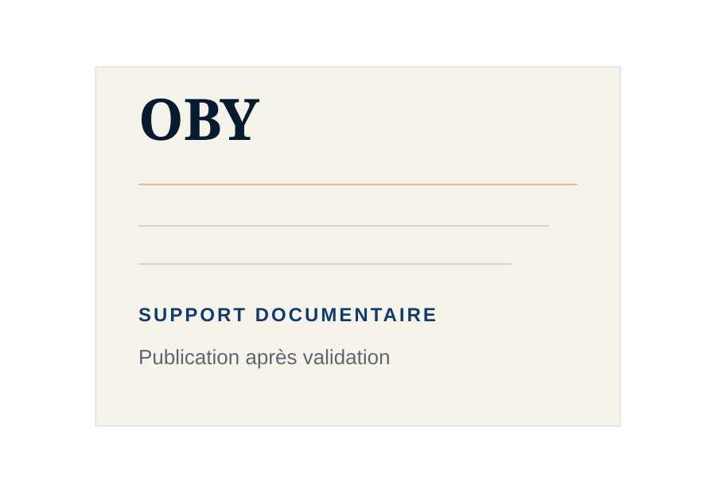
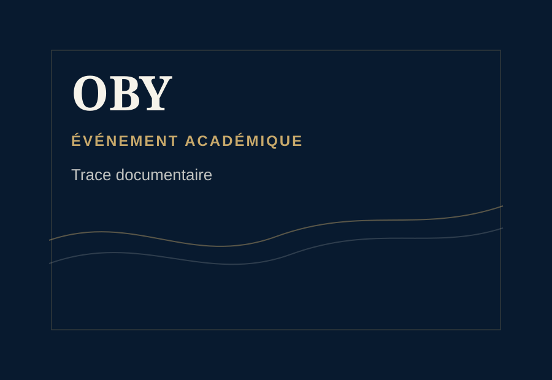
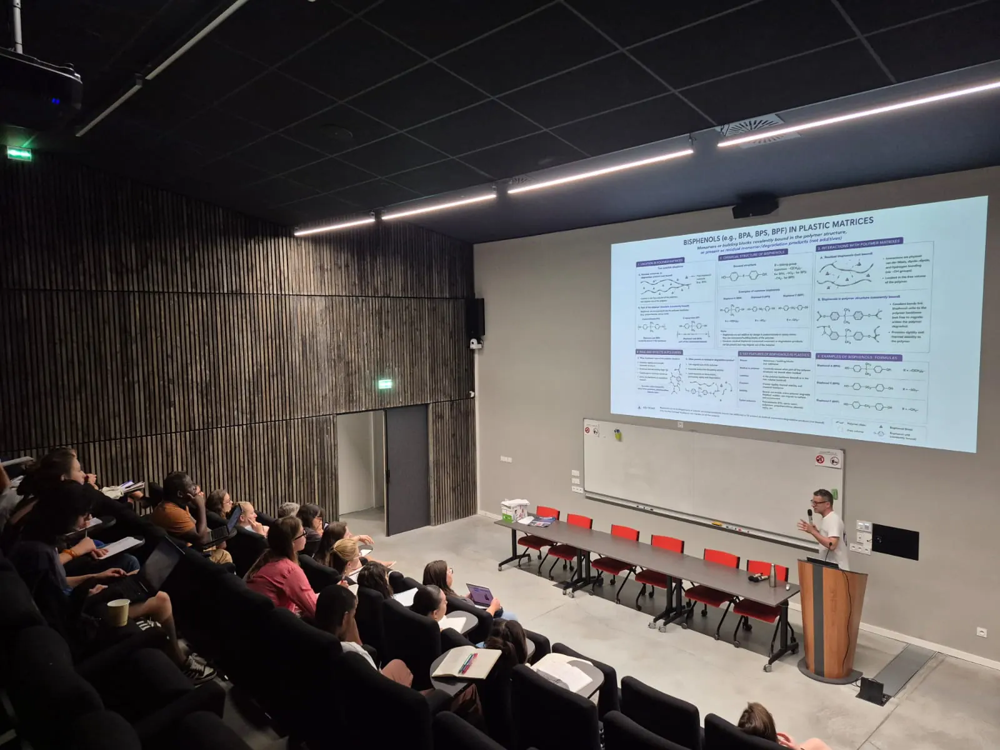
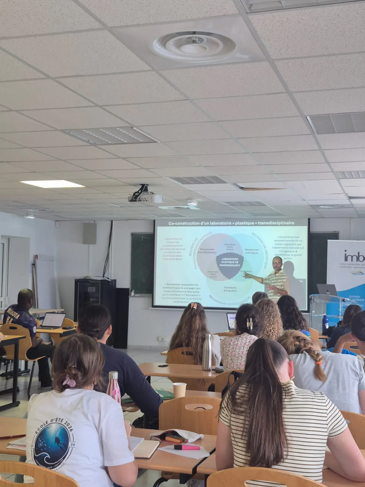
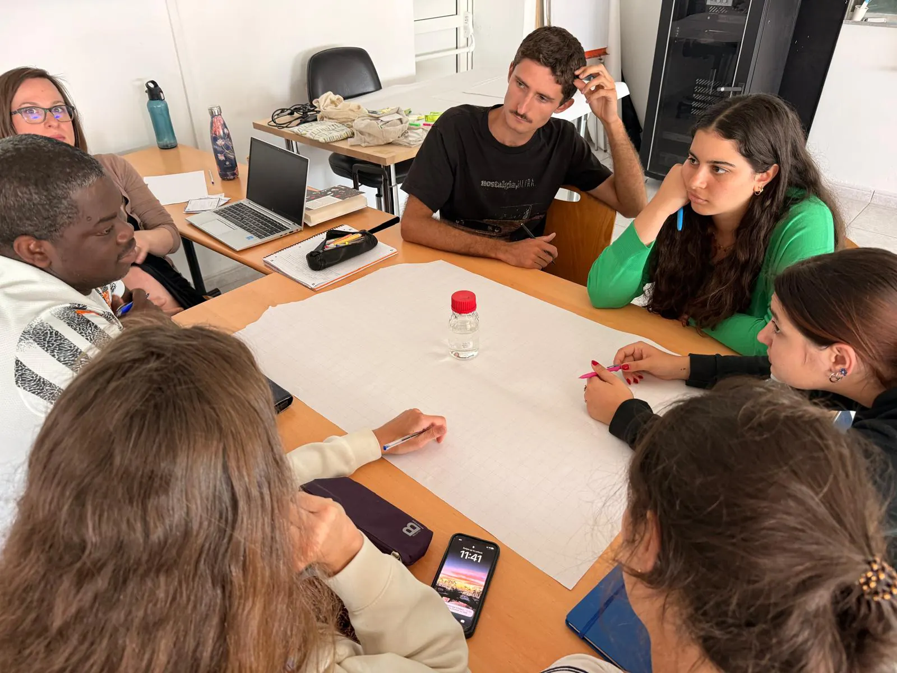
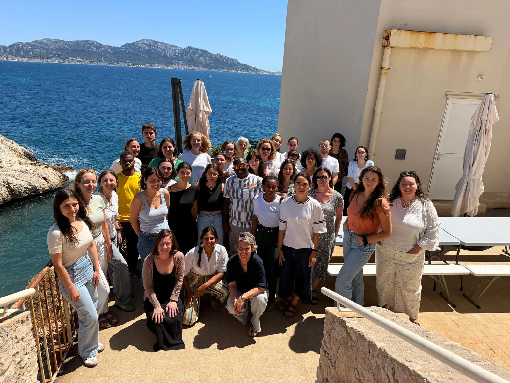
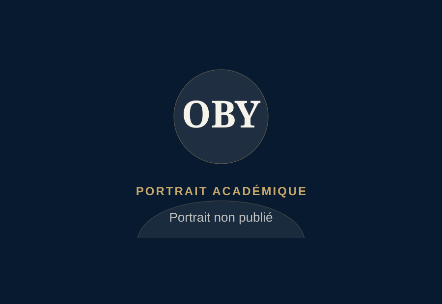
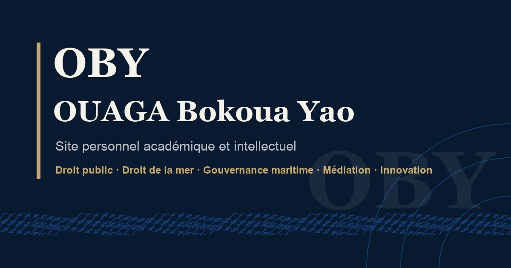

Éléments publiés
Supports déjà compatibles avec le site, comme l'image publique de partage OBY.

Une médiathèque de travail consacrée aux traces documentaires, supports sobres et repères visuels associés aux événements, terrains, ressources et espaces publics du parcours OBY.
La médiathèque n'est pas une galerie personnelle. Elle fonctionne comme un registre raisonné : chaque entrée situe une trace, un support ou une référence visuelle en lien avec un événement, un axe ou une page du site.
Supports déjà compatibles avec le site, comme l'image publique de partage OBY.
Repères liés à des participations, événements, programmes ou supports, sans média personnel publié.
Photos, badges, programmes ou captures conservés hors ligne tant que les droits, le contexte et la sensibilité ne sont pas validés.
Élément public déjà compatible avec le site.
Repère documentaire sans média personnel publié.
Média ou support conservé hors ligne par prudence.
Élément à contrôler avant toute publication future.
46 entrées documentaires
Dialogue des politiques, Sommet de Lomé, accord du Cap et Journée mondiale de la mer.
LittoralCOP24 / COY14, Convention d'Abidjan, WACA, PNUD océans et pollution des eaux.
MéditerranéeMedPAN, PROTEUS, Forum Mouillage, INDEMER et événements méditerranéens.
DroitERSUMA / OHADA, arbitrage, médiation administrative et différends maritimes.
Certains repères renforcent la trajectoire sans appeler de photo, badge ou document public. La médiathèque les signale comme cadres associés, mais ne publie aucun support sensible.
Repère lié au droit de la mer et au règlement des différends maritimes, sans média personnel publié.
FormationCadre académique documenté par une bourse, sans document ou attestation affiché.
AssociationResponsabilités juridiques associatives situées dans le récit du profil, sans document interne publié.
RéseauxRéseaux suivis ou documentés, mobilisés comme repères intellectuels plutôt que comme supports visuels.
Colloque académiqueTrace à documenter : colloque académique lié au droit de la mer, à la gouvernance internationale des océans et aux espaces de coopération maritime. Aucun média publié à ce stade.
AménagementTrace à documenter : repère institutionnel lié aux politiques régionales d'aménagement, à la biodiversité et aux solutions fondées sur la nature. Aucun support publié à ce stade.
MédiationTrace à documenter : réseau professionnel de médiation, cohérent avec les axes OBY relatifs au dialogue, à l'impartialité et aux modes amiables. Aucun média publié à ce stade.
Repères publics associés aux réseaux océaniques et aux traces officielles liées au parcours, sans publication de média privé.

Trace publique associée à une plateforme scientifique océanique, sans assimilation à un partenariat institutionnel.
Repère associéTrace publique associée à la Décennie des sciences océaniques pour le développement durable, sans présentation comme partenariat.
Repère associéTrace officielle publiée sur le carnet PROTEUS, reliée au littoral, aux aires marines protégées et à la prospective territoriale.
Participation associéeColloques, séminaires, conférences, forums et ateliers reliés aux participations publiques du parcours OBY.

Événement associé : colloque INDEMER sur les usages contemporains de la mer.
Participation associéeTrace documentaire conservée en interne ; aucun badge sensible n'est publié.
Participation associéeTrace documentaire non publiée, sans badge ni support sensible.
Participation associéeÉvénement associé : colloque des Académies de marine européennes.
Participation associéeÉvénement associé : protection de l'environnement en Méditerranée.
Participation associéeÉvénement associé : forum consacré aux enjeux de mouillage en Méditerranée.
Participation associéeÉvénement associé : transition pour une Méditerranée durable et résiliente.
Participation associéeÉvénement associé : vers une économie bleue durable.
Participation associéeParticipation à la première édition des Rencontres de l’Économie Bleue organisée par l’Institut des Sciences de l’Océan, autour de la durabilité, de l’interdisciplinarité et des relations entre recherche, institutions, acteurs économiques et monde maritime.
Participation associée · Source officielle
Présentation scientifique dans le cadre de l’École d’été Océan 2026 — Institut des Sciences de l’Océan / Aix-Marseille Université.
Participation associée · Source officielle
Séquence de cours dans le cadre de l’École d’été Océan 2026.
Participation associée · Source officielle
Atelier-débat dans le cadre de l’École d’été Océan 2026.
Participation associée · Source officielle
Photo de groupe publiée sur la page officielle de l’École d’été Océan 2026.
Participation associée · Source officielleTrace documentaire non publiée.
Participation associéeÉvénement associé : gouvernance des ressources et des activités maritimes pour le développement durable en Afrique.
Participation associéeTrace documentaire conservée en interne.
Participation associéeTrace documentaire non publiée.
Participation associéeÉvénement associé : séminaire régional sur la sécurité des navires de pêche.
Participation associéeÉvénement associé : sécurité et sûreté maritimes en Afrique.
Participation associéeÉvénement associé : enjeux de sécurisation de l'économie bleue dans le Golfe de Guinée.
Participation associéeTrace documentaire non publiée.
Participation associéeTrace documentaire identifiée, conservée hors ligne en raison d'éléments sensibles sur badge.
Participation associéeTrace documentaire identifiée, conservée hors ligne en raison d'éléments sensibles sur badge.
Participation associéeTrace documentaire non publiée.
Participation associéeTrace documentaire non publiée.
Participation associéeÉvénement associé : délimitation maritime africaine.
Participation associéeÉvénement associé : conférence climat et participation associative.
Participation associéeTrace documentaire non publiée.
Participation associéeTrace documentaire non publiée.
Participation associéeTrace documentaire non publiée.
Participation associéeTrace documentaire non publiée.
Participation associéeTraces visuelles associées aux terrains littoraux, institutions maritimes, stages, visites académiques et espaces d'observation.

Événement associé : tourisme dans les aires marines protégées.
Participation associéeProgrammes, affiches, attestations publiques ou supports documentaires traités avec prudence, selon les droits et la sensibilité des contenus.
Document public ou support associé conservé en interne.
Participation associéeSupport documentaire associé conservé en interne.
Participation associéePortrait officiel, visuels OBY, image de partage et supports d'identité publique.

Portrait public conservé hors ligne tant qu'il n'est pas autorisé.
Voir le profil
Image publique de partage et d'identité académique du site OBY.
Retour à l'accueilLes médias restent secondaires : ils documentent des parcours, événements et ressources déjà situés dans les autres pages OBY.